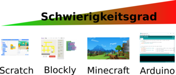
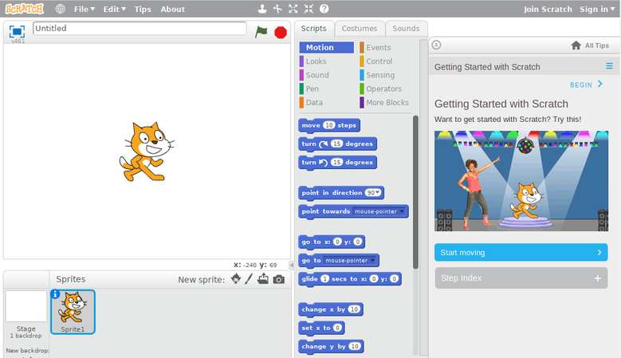
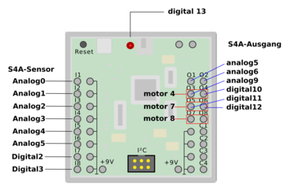
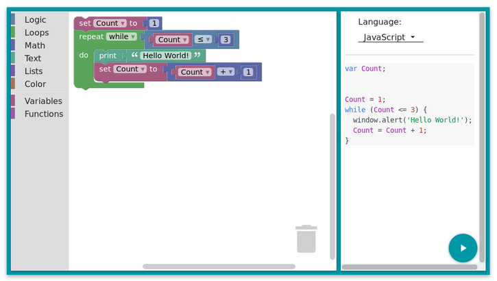
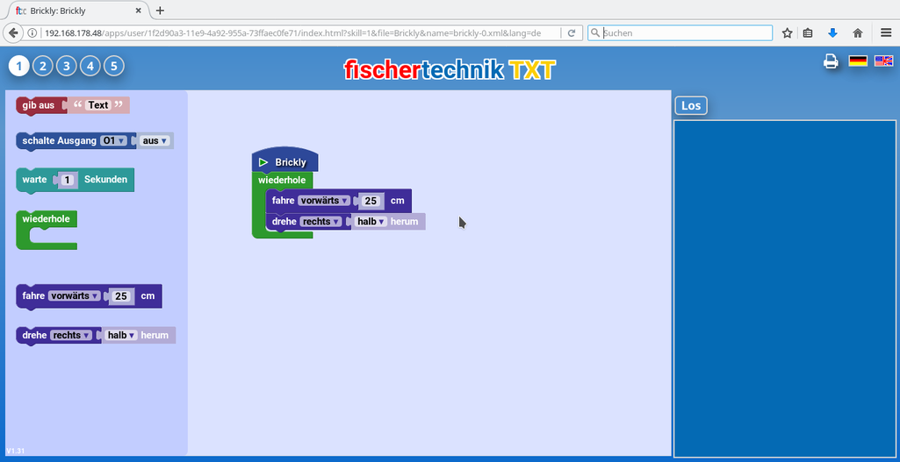
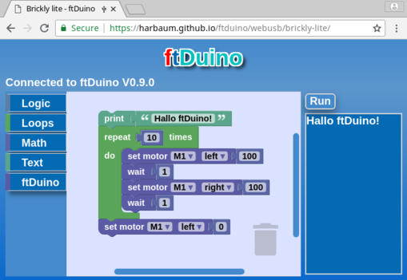
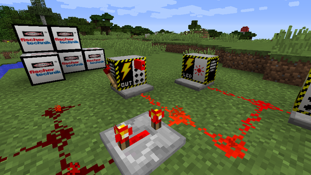
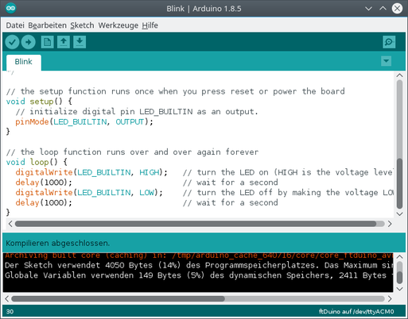

| 1. Controller | - | 2. Installation | - | 3. Erste Schritte | - | 4. Programmierung | - | 5. Schule | - | 6. Experimente | - | 7. Community | - | 8. Bibliotheken | - | 9. Aufbau | - | Anhang |
Der ftDuino wurde wie alle Mitglieder der Arduino-Familie in erster Linie zur Programmierung in der Sprache C++ entworfen wie in Kapitel 4 beschrieben. Wird der ftDuino im Vorfeld mit einem entsprechende Sketch versehen, so kann er mit wesentlich geringerem Anspruch aber auch ohne Programmierwissen verwendet werden. Der ftDuino lässt sich so sehr flexibel in unterschiedlichen Klassenstufen einsetzen.

Abbildung 5.1: ftDuino-Programmierumgebungen mit unterschiedlichem Schwierigkeitsgrad
In allen Fällen bedient sich der ftDuino dabei etablierten Projekten (Scratch, Blockly, ...). Dadurch bildet der ftDuino keine Insellösung sondern kann neben anderen z.B. Arduino-basierten Projekten gleichberechtigt eingesetzt werden. Wissen und Werkzeuge aus dem Arduino-Einsatz können auf den ftDuino übertragen werden und umgekehrt. Oft erlaubt der ftDuino so einen leichten Einstieg mit Hilfe eines fischertechnik-Modells und erst später folgt dann der elektrisch und mechanisch anspruchsvollere Aufbau auf Basis eines klassischen Arduinos.
Wikipedia schreibt zur Programmiersprache Scratch:
Ihr Ziel ist es, Neueinsteiger -- besonders Kinder und Jugendliche
-- mit den Grundkonzepten der Programmierung vertraut zu
machen. Unter dem Motto imagine, program, share („Ausdenken,
Entwickeln, Teilen“) wird die kreative und explorative Erstellung
eigener Spiele und Multimedia-Anwendungen, verbunden mit dem
gegenseitigen Austausch darüber, als Motivation genutzt. Kostenlos
und werbefrei können die Ergebnisse in einer internationalen
Online-Community mit dem Scratch-Player abgespielt, diskutiert und
weiterentwickelt werden. Außerdem gibt es einige Beispiele, die
Anregungen für Einsteiger schaffen und das Prinzip des
Programmierens näher bringen.
5.2.1 Zielsetzung
Scratch wurde im Original als reine Simulationsumgebung ausgelegt. Die Programmierung erfolgt grafisch mit der Maus am PC. Die Programmausführung sowie die Darstellung von Ergebnissen übernimmt ebenfalls der PC. Scratch sieht zunächst nicht vor, reale Hardware wie den ftDuino in die Programmentwicklung einzubinden.

Abbildung 5.2: Die Scratch-Programmierumgebung
Scratch stammt aus dem englischsprachigen Umfeld und ist im Original unter https://scratch.mit.edu/ zu finden. Es gibt aber auch deutschsprachige Portale wie das DACH-Scratch-Wiki unter https://scratch-dach.info und INF-Schule unter https://www.inf-schule.de/programmierung/scratch, die sich speziell an Lehrer und Schüler aus dem deutschen Sprachraum richten und einen Scratch-Einstieg in der Schule unterstützen.
Scratch läuft komplett im Web-Browser und benötigt neben dem Browser und einem sogenannten Flash-Player keine weitere Software auf dem PC.
Das Projekt Scratch for Arduino, kurz S4A baut auf Scratch auf und hat sich zum Ziel gesetzt, eine Interaktion zwischen virtueller Scratch-Welt auf dem PC und physischer an den PC angeschlossener Hardware herzustellen. Das S4A-Projekt greift dazu auf Arduinos zurück und integriert diese in die virtuelle Scratch-Umgebung. Das Scratch-Programm am PC kann dadurch auf Sensoreingaben (z.B. Tastendrücke) des angeschlossenen Arduino reagieren bzw. Aktionen an Aktoren (z.B. Lampen) am Arduino auslösen.
S4A ist mit den meisten gängigen Arduinos kompatibel. Diese müssen im Vorfeld mit einem entsprechenden Sketch versehen und per USB an den PC angeschlossen werden. Der entsprechende Sketch ist unter http://s4a.cat/ erhältlich.
Im Gegensatz zu Scratch läuft S4A nicht im Browser sondern erfordert die Installation eines separaten Programms auf dem PC. Entsprechende Downloads finden sich unter http://s4a.cat/.
S4A stammt aus dem spanischsprachigen Raum und ist im Original unter http://s4a.cat/ erhältlich. Deutschsprachige Informationen finden sich z.B. unter https://scratch-dach.info/wiki/S4A.
Die Anpassung von S4A an den ftDuino betrifft nur den ftDuino selbst und den dort zu installierenden Sketch. PC-seitig besteht kein Unterschied zwischen S4A und dessen Verwendung mit dem ftDuino. Es können problemlos Arduinos und ftDuino gemeinsam genutzt werden.
Da Arduino und ftDuino unterschiedliche Anschlüsse haben muss der Benutzer wissen, unter welcher Bezeichnung die Anschlüsse des ftDuino unter S4A angesprochen werden können. Das folgende Bild zeigt die entsprechende Zuordnung.

Abbildung 5.3: Zuordnung der ftDuino-Pins an S4A
Weiterführende Informationen zu Einsatz von S4A mit dem ftDuino finden sich in Abschnitt 8.6.
Die aktuelle Scratch-Version 2.0 läuft im Webbrowser, basiert aber technisch auf der nicht mehr aktuellen Flash-Technologie. Es ist absehbar, dass Scratch in dieser Form nicht mehr mit zukünftigen Web-Browsern funktionieren wird. Es gibt Arbeiten, Scratch mit modernen Technologien wie HTML5 umzusetzen.
Scratch for Arduino basiert auf der älteren Version 1.4 von Scratch. Diese läuft nicht im Browser sondern ist ein eigenständiges PC-Programm auf Basis der Programmiersprache Squeak.
Scratch wird in der Form, wie sie für S4A und damit für den ftDuino verwendet werden kann nicht weiterentwickelt. Es ist daher nicht mit nennenswerten Erweiterungen zu rechnen.
Google hat sowohl das Potenzial der Scratch-Idee erkannt als auch die technischen Beschränkungen, denen es inzwischen unterworfen ist.
Blockly ist Googles Versuch, die Scratch-Philosophie auf eine moderne technische Basis zu heben. Blockly basiert auf HTML5 und ist damit auf absehbare Zeit in allen gängigen Webbrowsern und auf allen gängigen Plattformen (u.a. Windows, Apple MacOS, Linux, Android und IOS) lauffähig.

Abbildung 5.4: Die Blockly-Benutzeroberfläche
Scratch bildet eine komplette Umgebung und beinhaltet neben der grafischen Code-Darstellung auch gleich die Möglichkeit, die erstellten Programme auszuführen und deren Ergebnisse darzustellen. Blockly selbst ist dagegen ein reiner Code-Editor. Der mit Blockly erzeugte Code kann von Blockly selbst daher nicht ausgeführt werden und Blockly bringt auch keine Mechanismen mit, um Programmausgaben darzustellen. Beides muss von einem Softwareentwickler erst hinzugefügt werden, um eine für den Endbenutzer verwendbare Umgebung zu schaffen.
Brickly (siehe Abschnitt 8.3) und Brickly-Lite (siehe Abschnitt 6.19.4) sind zwei auf Blockly basierende komplette Umgebungen, die speziell für den fischertechnik-TXT-Controller bzw. den ftDuino entwickelt wurden. Auch wenn beide Umgebungen bewusst ähnlich gehalten wurden und sich für den Anwender sehr ähnlich darstellen ist die technische Funktion sehr unterschiedlich.
Im Falle von Brickly wird Blockly genutzt, um Code für den TXT-Controller zu entwickeln. Brickly ist erzeugt im Browser sogenannten Python-Code, der auf den TXT übertragen und dort ausgeführt wird. Einmal erstellte Brickly-Programme befinden sich dauerhaft auf dem TXT und können zu jedem späteren Zeitpunkt auch direkt am TXT manuell gestartet werden. Ein Web-Browser wird nur benötigt, um neue Programme zu erstellen. Während der Programmausführung auf dem TXT können Ausgaben auf dem Bildschirm des TXT erfolgen. Ist der Benutzer mit dem Web-Browser mit dem TXT verbunden, so werden diese Ausgaben vom TXT zusätzlich zurück an den Browser gesendet und dort ausgegeben.

Abbildung 5.5: Die Brickly-Benutzeroberfläche
Sämtliche im Browser dargestellten Informationen werden vom TXT an den Browser übertragen. Es werden keine Daten mit dem übrigen Internet ausgetauscht.
Brickly wurde primär dazu entwickelt, die Ein- und Ausgänge des TXT zu bedienen. Bricklys auf Blockly basierender grafischer Editor wurde daher um Blöcke erweitert, die sich zur Bedienung der Anschlüsse des TXT eignen. Durch zusätzliche Installation eines sogenannten Brickly-Plugins auf dem TXT (siehe https://github.com/harbaum/brickly-plugins) kann Brickly erweitert werden. Ein solches Plugin erlaubt es, einen ftDuino per USB mit dem TXT zu koppeln und aus dem Brickly-Programm heraus neben dem TXT selbst auch die Anschlüsse des angeschlossenen ftDuino zu bedienen.
Brickly ist auch von jungen Schülern leicht zu bedienen und verfügt gegenüber Scratch über eine einfachere und leichter zu nutzenden Benutzeroberfläche. Die Nutzung von Brickly erfordert aber zuvor die Installation der Brickly-Software auf dem TXT, was wiederum die Nutzung der sogenannten Community-Firmware auf dem TXT voraussetzt (siehe https://cfw.ftcommunity.de/ftcommunity-TXT/de/). Für die Nutzung des ftDuino am TXT ist zusätzlich die Installation des ftDuino-Plugins nötig. Sehr erfahrene Nutzer können statt des TXT-Controllers auch den wesentlich günstigeren Raspberry-Pi nutzen. Für den Endanwender ergibt sich kein Unterschied, auch dieses Setup ist von Schülern leicht zu bedienen.
Zur späteren Nutzung von Brickly sind folgende vorbereitende Schritte nötig:
Soll zusätzlich der ftDuino von TXT aus angesprochen werden sind weiterhin folgende Schritte nötig:
Wesentlich geringer als bei Brickly ist der administrative Aufwand bei der Nutzung von Brickly-Lite. Aus Schülersicht ist der Unterschied zwischen Brickly und Brickly-Lite minimal. Brickly-Lite bietet eine nochmal vereinfachte Darstellung.

Abbildung 5.6: Die Brickly-Lite-Benutzeroberfläche
Im Gegensatz zu Brickly bezieht Brickly-Lite alle Daten aus dem Internet. Für die Benutzung von Brickly-Lite ist daher eine Internet-Verbindung Voraussetzung. Und während bei Brickly der Browser lediglich zur Code-Eingabe und zur Ergebnisausgabe verwendet wird übernimmt er bei Brickly-Lite fast alle Aufgaben inklusive der eigentlichen Programmausführung. Der ftDuino stellt daher bei Brickly-Lite dem Browser seine Ein- und Ausgänge zur Verfügung, führt aber das eigentliche Brickly-Programm nicht aus. Aus diesem Grund ist zur späteren Programmausführung der Browser immer nötig. Ein mit Brickly-Lite erstelltes Programm kann ohne Browser nicht ausgeführt werden.
Der Schüler merkt von diesen Unterschieden nichts. Für den Lehrer ist aber der Vorbereitungsaufwand gegenüber Brickly sehr viel geringer, da neben ftDuino und Browser keine weiteren Komponenten benötigt werden. Größte Einschränkung ist die Festlegung auf den Chrome-Browser (siehe https://www.google.com/intl/de_ALL/chrome/). Dieser wird benötigt, da nur dieser Browser-Typ mit lokal per USB abgeschlossenen Geräten wie in diesem Fall dem ftDuino kommunizieren kann.
Zur Nutzung von Brickly-Lite sind folgende Schritte nötig:
Minecraft ist ein extrem populäres Aufbauspiel. Es beinhaltet unter anderem eine Art elektrischer Schaltungssimulation in Form des sogenannten Redstone. Mit diesem leitfähigen virtuellen Material lassen sich entsprechende Blöcke im Spiel verbinden und es lassen sich Spiel-interne Sensoren wie Taster und Schalter mit Aktoren wie Lampen und Druckzylindern verbinden. Zusätzliche Logikelemente wie die Redstone-Fackel (Inverter, Negierer), ein Vergleicher oder ein Verzögerungselement erlauben komplexe Schaltungen.
Mit dem ftDuino lässt sich Minecraft mit der physischen Welt verbinden und virtuelle Sensoren in Minecraft können physische fischertechnik-Aktoren auslösen und umgekehrt.

Abbildung 5.7: Minecraft mit ftDuino-Schnittstelle
Die Vorbereitungszeit auf Lehrerseite beschränkt sich auf das Ausspielen des passenden Sketches auf den ftDuino sowie die Installation der entsprechenden ftDuino-Mod in eine bestehende Minecraft-Installation wie in Abschnitt 8.7 beschrieben. Minecraft ist eine kommerzielle Software und benötigt eine seperat zu erwerbende Lizenz. Die Modifikation des Spiels durch Erweiterungen wie der ftDuino-Mod wurde vom Hersteller explizit vorgesehen und verletzt keine Lizenzbedingungen.
Auf Schülerseite ist die Einarbeitung theoretisch recht aufwändig. In der Praxis ist ein großer Teil der Schüler mit den Konzepten von Minecraft bis ins kleinste Detail vertraut und versteht die Logik der zusätzlichen ftDuino-Blöcke sofort. In der Regel sind Minecraft-erfahrene Schüler in wenigen Minuten in der Lage einfache Schaltungen wie Lauflichter zu realisieren und mit dem physischen Modell zu verbinden.
Der Einsatz von Minecraft eignet sich vor allem zur Motivation bereits Minecraft-affiner Schüler. Als Lehrer hat man hier besonders mit Schülern zu rechnen, die ein extrem großes Fachwissen und erstaunliche Fähigkeiten mitbringen. Minecraft lädt geradezu dazu ein, unorthodoxe Lösungen zu erstellen und z.B. virtuelle Lebewesen oder Fahrzeuge (Loren) in die Signbalverarbeitung einzubinden.
Zur Nutzung von Minecraft sind folgende im Abschnitt 8.7 im Detail beschriebenen Schritte nötig:
Scratch und Brickly sind selbst komplexe Konstrukte. Sie werden als Programm auf dem PC oder als aktive Webseite im Browser z.B. eines Mobilgeräts ausgeführt. Der ftDuino fungiert in beiden Fällen nur als relativ passiver Schnittstellenbaustein. Er nimmt Befehle über seinen USB-Anschluss vom PC entgegen und sendet Ergebnisse zurück.
Für den Anwender bleibt damit -- wie bei der Benutzung von PCs üblich -- der größte Teil der Technik in den Programmen verborgen. Während sich so die Grundlagen der Programmierung verstehen lassen ist es einem Anfänger kaum möglich, alle zugrundeliegenden Komponenten und Verfahren zu verstehen.
Das ursprüngliche Konzept der Arduinos zielt darauf ab, ein fundamentales Verständnis zu vermitteln. Der Arduino und der davon abgeleitete ftDuino gehören zu den technisch einfachsten programmierbaren Geräten. Die Technik auf der sie basieren entspricht derjenigen, die auch in vielen alltäglichen Geräten wie Computermäusen, Kaffeemaschinen oder Getränkeautomaten nahezu unsichtbar und unbemerkt eingesetzt wird.
Die Zahl und Komplexität der auf einem Arduino verwendeten Bauteile ist so gering wie möglich gehalten, so dass das gesamte Gerät auch von interessierten Laien weitgehend durchschaut werden kann. Trotzdem liegen die für diese Art der Verwendung nötigen Fähigkeiten deutlich über denen zur Benutzung von Scratch oder Brickly. Der direkte Umgang mit dem Arduino erfordert größeres Know-How bei Schüler und Lehrer und ist ungefähr ab Klasse 7 bis 8 sinnvoll möglich.

Abbildung 5.8: Die Arduino-IDE
Arduinos werden bereits in breitem Maße in der Schule eingesetzt. Speziell der geringe Preis und die Verbreitung in Privathaushalten führt zu einer geringen Einstiegshürde.
Allerdings ist die Lernkurve relativ steil und das erforderliche Know-How steigt mit der Komplexität der Aufgabenstellungen schnell an. Arduinos werden als unverkleidete Platinen vertrieben und ihre Elektronik und Anschlüsse sind gegen äußere Einflüsse weitgehend ungeschützt. Vor allem der geringe Preis relativiert diese Nachteile, da sich versehentlich zerstörte Teile mit geringen Kosten ersetzen lassen. Die einfachsten Arduinos sind für unter drei Euro erhältlich, weitere Kosten fallen zunächst nicht an.
Die Programmierumgebung Arduino-IDE ist als kostenloser Download unter https://www.arduino.cc/en/Main/Software für alle gängigen PC-Betriebssysteme verfügbar. Viele Dokumentationen und Beispiele sind im Internet frei verfügbar. Arduino-Soft- und Hardware ist unter gängigen Open-Source-Lizenzen verfügbar und darf lizenzfrei geteilt werden. Der Einsatz in der Schule ist damit bedenkenlos möglich und der freie Austausch der meisten Unterlagen unterliegt keinen im Schul-Umfeld relevanten Beschränkungen.
Der ftDuino ist eine Erweiterung des Arduino-Konzepts in Richtung fischertechnik. Der ftDuino wird programmiert wie ein Arduino, nutzt aber elektrische und mechanische fischertechnik-Komponenten, um den Aufbau komplexer Modell zu ermöglichen.
Dabei bietet der ftDuino gegenüber einem Arduino einige Vereinfachungen, die die Einstiegshürde senkt. Der ftDuino ist aus Anwendersicht nicht zwangsläufig als Fortführung des Arduino-Gedankens zu verstehen. Er eröffnet vielmehr einen einfacheren Einstieg in die Arduino-Welt.
Der ftDuino lehnt sich nah an den Arduino Leonardo an. Er erweitert den Leonardo um folgende Eigenschaften:
Der ftDuino erlaubt den einfachen und unproblematischen Einstieg in den Arduino-Einsatz in der Schule. Er ist robust genug für den Schulalltag und erfordert zusammen mit dem fischertechnik-System keine weiteren elektrischen, elektronischen oder mechanischen Voraussetzungen. Alle mechanischen und elektrischen Verbindungen werden gesteckt und es wird kein Werkzeug benötigt. Viele direkt mitgelieferte Beispiele u.a. in dieser Anleitung erlauben einen einfachen und sicheren Start.
Der ftDuino kann dabei den Einsatz des klassischen Arduino vorbereiten. Der Aufbau eines Prototypen aus ftDuino und Arduino bietet einen sicheren Start. Eine spätere Umsetzung mit klassischen Arduinos, zusätzlicher Elektronik und speziell aufgebauter Mechanik erfolgt dann auf Basis der mit dem ftDuino gewonnenen Erkenntnissen.
| ftDuino manual - schule | (c) 2017-2019 Till Harbaum |